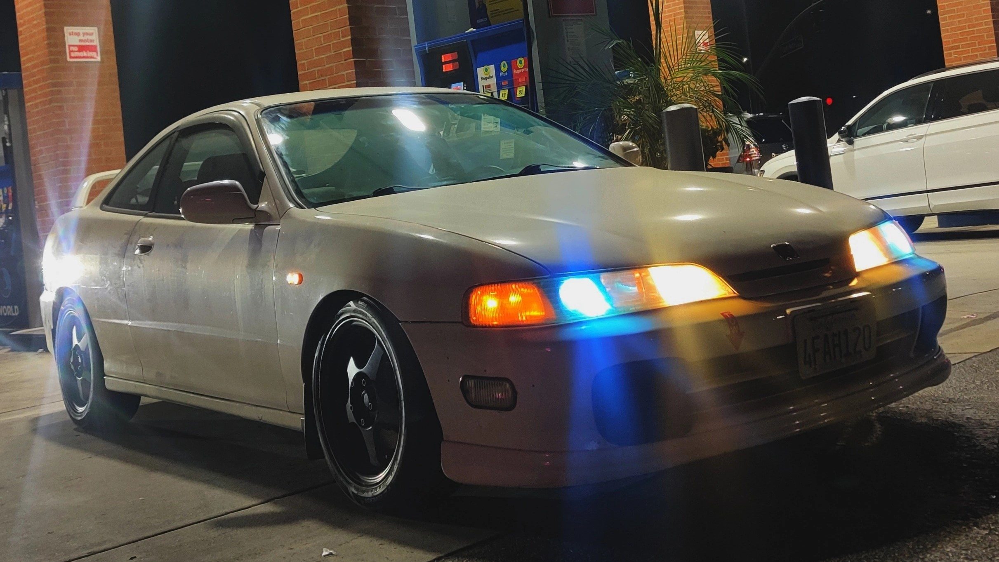
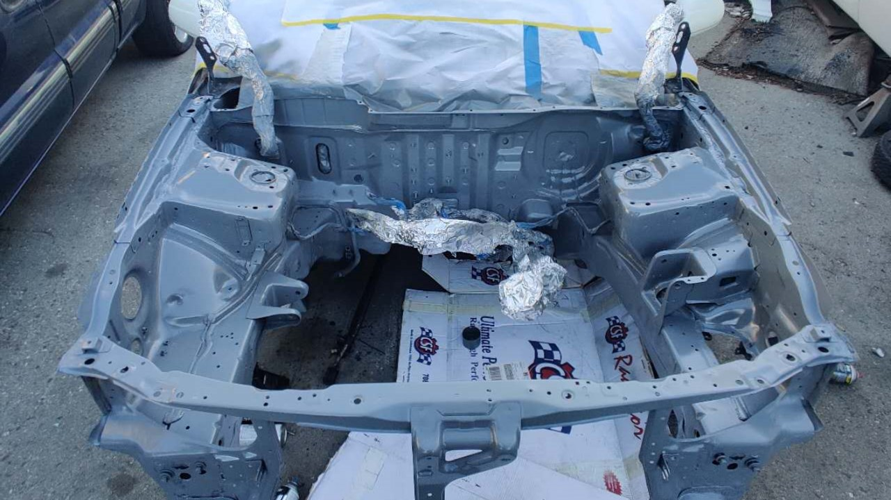
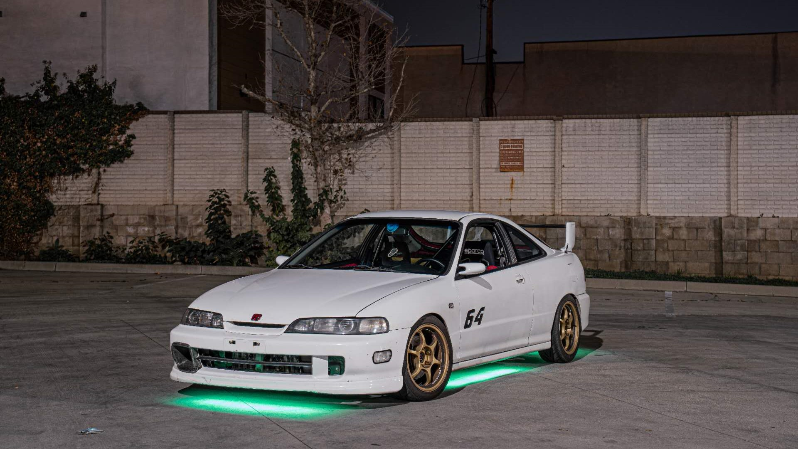

Mod List / Car Specs
- Advan RG1
- Federal RS-R
- Sparco Sprint
- Greddy EVO
- PCI RTA Bearing
- Mugen Gen2 Wing
95' Honda Integra RS
Finally I found the car that where got me started into Integra. It’s a white 1995 Honda Integra RS with a Japanese front end. However, the mechanical condition of the car wasn’t really great, the engine had a bad oil leak and it needs a rebuilt. So I decided to take the engine apart and replaced the head gasket. Later, I found the head bolts on the engine is stripped and it’s no longer useable. The only route I was left with was to replace the engine.
After I pulled the engine, I decided to paint the engine bay of the car in battleship gray since the engine is already out. Then I bought a used engine and gave it a refresh, then I install the engine into the car. The car sat on jack stands for nearly half a year, and this process took much longer than I expected, but I really like the outcome. During the process, I kept telling myself, since you are doing it, try your best to make it better.
Finally I got the car running and I’m really happy with how everything came together. I took a lot more photos of this car than my previous cars. If I can, I want to keep this car for the rest of my life!
